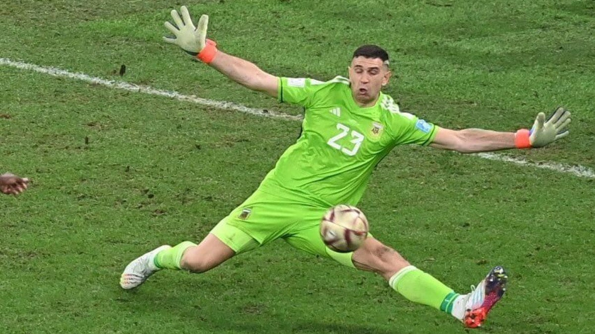

𝘖 𝘮𝘰𝘮𝘦𝘯𝘵𝘰 𝘥𝘦𝘤𝘪𝘴𝘪𝘷𝘰 𝘢𝘤𝘰𝘯𝘵𝘦𝘤𝘦𝘶 𝘯𝘢 𝘱𝘳𝘰𝘳𝘳𝘰𝘨𝘢çã𝘰, 𝘲𝘶𝘢𝘯𝘥𝘰 𝘰 𝘢𝘵𝘢𝘤𝘢𝘯𝘵𝘦 𝘧𝘳𝘢𝘯𝘤ê𝘴 𝘙𝘢𝘯𝘥𝘢𝘭 𝘒𝘰𝘭𝘰 𝘔𝘶𝘢𝘯𝘪 𝘵𝘦𝘷𝘦 𝘶𝘮𝘢 𝘰𝘱𝘰𝘳𝘵𝘶𝘯𝘪𝘥𝘢𝘥𝘦 𝘥𝘦 𝘰𝘶𝘳𝘰 𝘱𝘢𝘳𝘢 𝘮𝘢𝘳𝘤𝘢𝘳. 𝘊𝘰𝘮 𝘶𝘮 𝘳𝘦𝘧𝘭𝘦𝘹𝘰 𝘪𝘮𝘱𝘳𝘦𝘴𝘴𝘪𝘰𝘯𝘢𝘯𝘵𝘦, 𝘔𝘢𝘳𝘵í𝘯𝘦𝘻 𝘴𝘦 𝘦𝘴𝘵𝘪𝘤𝘰𝘶 𝘦 𝘤𝘰𝘯𝘴𝘦𝘨𝘶𝘪𝘶 𝘥𝘦𝘴𝘷𝘪𝘢𝘳 𝘰 𝘤𝘩𝘶𝘵𝘦, 𝘮𝘢𝘯𝘵𝘦𝘯𝘥𝘰 𝘰 𝘦𝘮𝘱𝘢𝘵𝘦 𝘦 𝘮𝘢𝘯𝘵𝘦𝘯𝘥𝘰 𝘷𝘪𝘷𝘢 𝘢 𝘦𝘴𝘱𝘦𝘳𝘢𝘯ç𝘢 𝘢𝘳𝘨𝘦𝘯𝘵𝘪𝘯𝘢. 𝘌𝘴𝘴𝘢 𝘪𝘯𝘵𝘦𝘳𝘷𝘦𝘯çã𝘰 𝘯ã𝘰 𝘢𝘱𝘦𝘯𝘢𝘴 𝘨𝘢𝘳𝘢𝘯𝘵𝘪𝘶 𝘲𝘶𝘦 𝘢 𝘈𝘳𝘨𝘦𝘯𝘵𝘪𝘯𝘢 𝘱𝘦𝘳𝘮𝘢𝘯𝘦𝘤𝘦𝘴𝘴𝘦 𝘯𝘢 𝘥𝘪𝘴𝘱𝘶𝘵𝘢, 𝘮𝘢𝘴 𝘵𝘢𝘮𝘣é𝘮 𝘳𝘦𝘧𝘰𝘳ç𝘰𝘶 𝘢 𝘱𝘰𝘴𝘪çã𝘰 𝘥𝘦 𝘔𝘢𝘳𝘵í𝘯𝘦𝘻 𝘤𝘰𝘮𝘰 𝘶𝘮 𝘥𝘰𝘴 𝘨𝘳𝘢𝘯𝘥𝘦𝘴 𝘨𝘰𝘭𝘦𝘪𝘳𝘰𝘴 𝘥𝘢 𝘤𝘰𝘮𝘱𝘦𝘵𝘪çã𝘰. 𝘚𝘶𝘢 𝘢𝘵𝘶𝘢çã𝘰 𝘩𝘦𝘳𝘰𝘪𝘤𝘢 𝘧𝘰𝘪 𝘶𝘮 𝘥𝘰𝘴 𝘱𝘪𝘭𝘢𝘳𝘦𝘴 𝘱𝘢𝘳𝘢 𝘢 𝘷𝘪𝘵ó𝘳𝘪𝘢 𝘢𝘳𝘨𝘦𝘯𝘵𝘪𝘯𝘢 𝘯𝘰𝘴 𝘱ê𝘯𝘢𝘭𝘵𝘪𝘴 𝘦 𝘤𝘰𝘳𝘰𝘰𝘶 𝘢 𝘴𝘦𝘭𝘦çã𝘰 𝘤𝘰𝘮 𝘰 𝘵𝘳𝘰𝘧é𝘶 𝘵ã𝘰 𝘥𝘦𝘴𝘦𝘫𝘢𝘥𝘰.